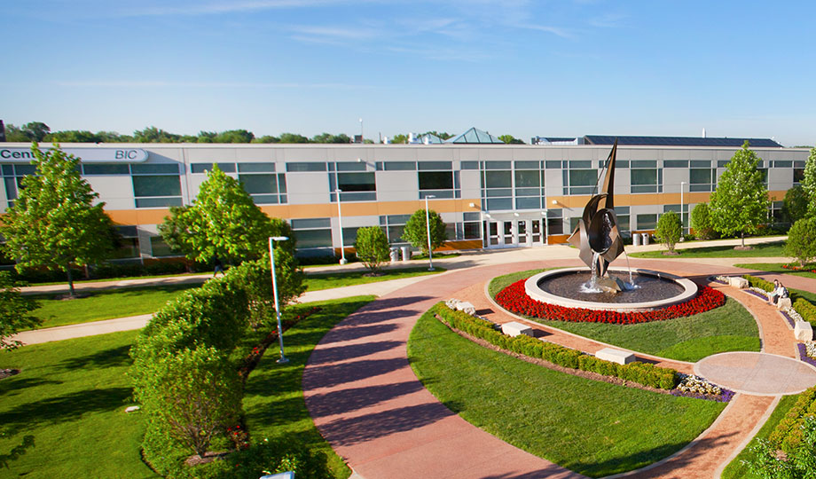
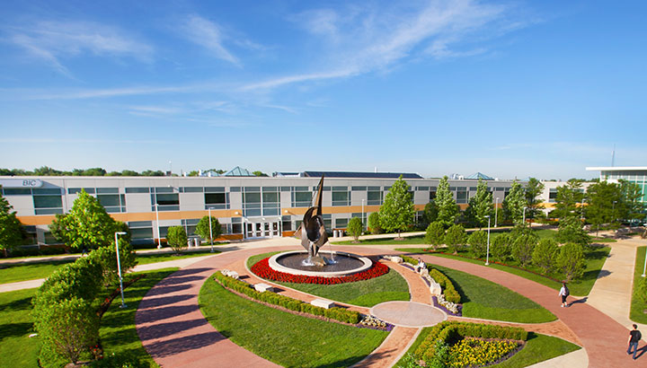
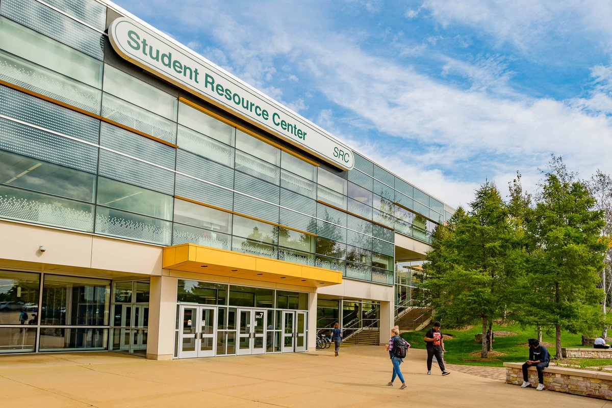

LOUIS UNIVERSITY COLLEGE
"We Assure For Your Better Future"
luc.edu.com.ph
"We Assure For Your Better Future"
luc.edu.com.ph
It was a beginning marked by simplicity. By modesty. A period stamped with nothing but desire and hope: the desire to provide ordinary young men and women with good but not a costly education and the hope that doing so may improve the quality of their lives. May mean the realization of their dreams. This was the LOUIS UNIVERSITY COLLEGE: with an opening enrolment of 239 in the first semester, 232 in the second semester, and, 69 in the summer. This was the CCC of old: offering a Bachelor of Science in Commerce and an Associate in Secretarial Science in its initial year.
Those were the days: the period of knocking on doors to inquire whether a young person was interested in going to a school, near where? Behind Victor Theater? At the back of Snow Sheen? The time of scrounging for chalk and eraser for teachers so that the students would read at least a little something on the board. The moment of barely meeting salaries for employees payday after payday. Slowly but surely, however, CCC grew. Because Atty. Augusto W. Go and companions built it, people came - students came. The 239 became 380, then 531, and on the 8th school year as the LOUIS UNIVERSITY COLLEGE of Commerce, 4185. Consequently, more courses opened: Education, Liberal Arts, Criminology, Customs. Spanning, indeed, 8 full school years from School Year 1964-65 up to School Year 1971-72, CCC has began to make itself felt in the LOUIS UNIVERSITY COLLEGE, in Region VII, and in the lives of many poor families whose fortunes have changed by the CCC education their children received. The growth was simply inspiring: from an initial offering of Commerce and Secretarial, CCC began to offer diplomas in Education, Liberal Arts, Customs Administration, Criminology, Nautical; and, from an initial 239 population, CCC reached the 4, 000 mark on its 8th year.
It was time then to face greater challenges. It was a moment then for CCC to reinvent itself and give itself a new name. Beginning School Year 1972-73, CCC has now called itself the LOUIS UNIVERSITY COLLEGE. And, for a good 20 years, it did so. Enrolment rose. Initially, it was 5097. Then, it dipped to a low 5023, recovered to 6517 and on its final year as CCC, to a phenomenal 16,998. And the list of curricular programs grew long: Nursing, Midwifery, Health Aide; Naval Architecture and Marine Engineering; Mechanical, Electrical and Civil Engineering; Hotel and Restaurant Management; information and Computer Science; Computer Engineering; and, even a Graduate School. As well as a Marine Officers Training Course. LUC, in 1983, was the first in Cebu and in the entire Region VII to offer a course offering on Computer Science after Atty. Augusto W. Go returned from his trip to the United States. 
Then, at the initiative of Dr. Erlinda Barcelo, the revered and, the same time, feared word "Accreditation" took on a deeper meaning and pointed out a new direction. Of what was then the beginning of a series of efforts in improving the quality of education at CCC, PACU-COA Accreditors visited the school on a Preliminary Visit for a Level 1 status of BSMT and AME from October 13 to 14, 1986. Her efforts did not go in vain: on February, 1988, PACU-COA announced its recognition of the level 1 status of BSMT and AME. And years after this, PACU-COA would continue doing so for various other course offerings of the LOUIS UNIVERSITY COLLEGE The growth, however, at CCC was not only confined to numbers and courses. There too was physical growth. In 1991, the BSMT Campus in Alumnos, Mambaling was inaugurated, the constitution of the Science and Technology Building at the South Expressway commenced and the New LOUIS UNIVERSITY COLLEGE Coliseum acquired. With forty-two (42) years of quality education, the University ofLOUIS UNIVERSITY COLLEGE has been awarded a Deregulated status by the Commision on Higher Education (CHED), while recognized by the Philippine Association of Colleges and Universities Commision on Accreditation (PACUCOA) as a learning institution with the most accredited programs. Currently, LOUIS UNIVERSITY COLLEGE is cultivating more than 42,000 promising young minds while producing board topnotchers through its four campuses that are conveniently situated within different parts of Cebu
Copy Right 2021-2022 @ LOUIS UNIVERSITY COLLEGE